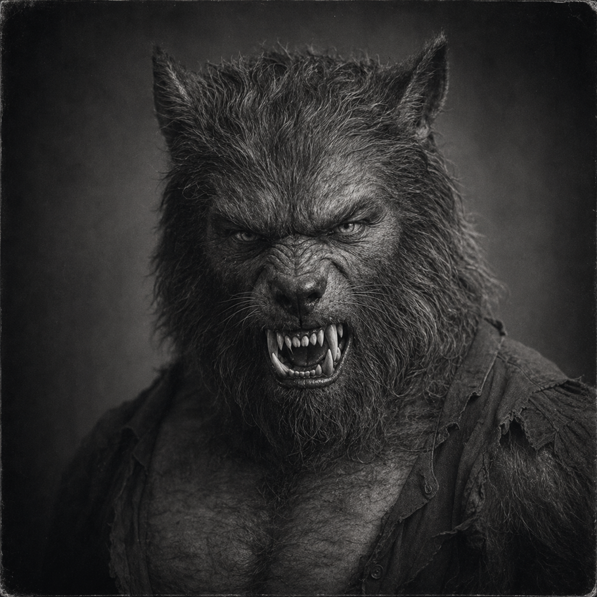

Joe Bob Gray (Werewolf Form)
(376 Points)
Male; Age 27; 7'10", 350 lbs; A Huge Hulking Bipedal Man-wolf with 4" talons and sharp teeth.
| ST: 28/15 [165] | IQ: 7 [-20] | Speed: 7.50 |
| DX: 15 [60] | HT: 15/28 [60] | Move: 8 |
| Dodge: 7/6 | Parry: 11 |
Advantages
Acute Taste and Smell +1 [2] (Taste and Smell: 11); Acute Vision +1 [2] (Vision: 11); Acute Hearing +1 [2] (Hearing: 11); Alertness +3 [15]; High Pain Threshold [10]; Regeneration (1 HT/turn) [80] (Subtraction (No Healing From Silver/Magic Weapons): -20); Enhanced Strength 28 [0] (Thrust: 3d-1; Swing: 5d+1); Immunity to Poison [15]; Sharp Teeth [5] (Damage: cut 3d-1); Claws (Talons) [40] (Damage: imp 3d-1, cut 5d+1); Super Running 1 (16.75 / 34 MPH) [20] (Speed (running): 16.875; MPH: 35).
Disadvantages
Mute (Only Growls and Snarls) [-25]; Berserk [-15]; Monstrous [-25] (Reaction: -5); Amnesia (Doesn't Remember Being Human) [-25]; Bloodlust [-10].
Skills
Brawling-17 [4] (Parry: 11); Jumping-15 [1]; Running (Move: 16.875)-15 [4]; Stealth-15 [2]; Climbing-14 [1]; Tracking-10 [8].
Equipment
Backpack, Canvas (3 lbs.; $10); Binoculars, 10x (2 lbs.; $30); Camera, Kodak "Box Brownie" (1 lb.; $2.50); Cartridge Belt (2 lbs.; $1); Cigarette Lighter ($1); Duffle Bag, Canvas (3 lbs.; $2); Film, b/w (roll of 6; $0.30); First Aid Kit, Medic (10 lbs.; $15; +2 to First Aid); Fishing Gear (5 lbs.; $10; Pole, Reel, and Tackle); Flashlight (1 lb.; $2); Flashbulb (disposable; $0.05); Holster, Shoulder (1 lb.; $1.50; +1 to Holdout); Lantern, Kerosene (5 lbs.; $12; 2 pints of fuel last 12 hours.); Playing Cards ($½); Quinine, 30 pills ($5); Shovel (5 lbs.; $1); Rope, 50 yds (15 lbs.; $5); Stove, Camp (3 lbs.; $5; Burns 1 pint of gas in 2 hours.); Sulfa Powder, 5 uses ($1; Helps prevent infection.); Tent, Small (9 lbs.; $20; Holds 1-2); Belt, Leather (½ lbs.; $¾; TL: 6); Boots, Leather (PD 2, DR 2; 4 lbs.; $10); Clothing, Ordinary (4 lbs.; $7; TL: 6); Clothing, Formal (4 lbs.; $20; TL: 6); Gloves, Heavy Leather (PD 2, DR 2; ½ lbs.; $3); Hat, Formal ($3; TL: 6); Scarf, Silk (¼ lbs.; $5; TL: 6); Large Knife (cut 1d+2, imp 1d+2, Skill: 11, Parry: 4; 1 lb.; $3; Reach: C, 1;C); Pocketknife (cut 1d+1, imp 1d+1, Skill: 11, Parry: 4; $1.50; Reach: C,1;C); Sap (Blackjack) (cr 3d-1, Skill: 11, Parry: 0; 1 lb.; $½; Reach: C; ST: 7); Smith & Wesson Military & Police .38 Special (cr 2d-1, Skill: 11; 2 lbs.; $30; Malfunction: crit.; SS: 10; Acc: 2; Half DMG: 120; MAX: 1500; RoF: 3~; Shots: 6; ST: 8; Rcl: -1; TL: 6); Springfield M1903 .30-06 (cr 7d+1, Skill: 11; 9 lbs.; $120; Malfunction: crit.; SS: 14; Acc: 11; Half DMG: 1000; MAX: 4200; RoF: 1/2; Shots: 5+1; ST: 12; Rcl: -3; TL: 6); Remington M11 12g (cr 4d, Skill: 11; 10 lbs.; $50; Malfunction: crit.; SS: 12; Acc: 5; Half DMG: 25; MAX: 150; RoF: 3~; Shots: 5+1; ST: 12; Rcl: -2; TL: 6); Knife (small) (cut 1d+1, imp 1d+1, Skill: 11, Parry: 4; ½ lbs.; $30; Reach: C, 1;C); Saber (cut 5d+1, imp 1d+2, Skill: 10, Parry: 5; 2 lbs.; $700; Reach: 1; 1; ST: 7).Description
Joe Bob Gray works as a private investigator in New Orleans, which means he spends his days prying into other people's lies while guarding one enormous lie of his own. From an early age he learned that anger, fear, or the wrong sort of pressure could strip him out of his human mind and throw him into an animal state that remembers very little except hunger, violence, and the crooked instinct to keep moving toward unfinished business. He did not grow into the curse gracefully. He grew around it the way men grow around a shotgun scar, by building routines, bad habits, and self-containment wherever there is room. The PI shell came later: a workable profession for a man who knows how to follow trouble, read desperation, and keep his own mouth shut while searching for the cure he still believes must exist somewhere.Joe Bob is not a pleasant man, and the project does him no favors by pretending otherwise. He carries ugly politics, inherited hatred, and the sort of Southern Gothic damage that makes moral rot and bodily transformation feel uncomfortably at home beside each other. That ugliness should not be softened into charm, but neither should it be allowed to replace the rest of him. He is still competent, still cagey, still frightened by what he becomes, and still committed enough to the idea of a cure that he keeps trying to function in the world instead of simply giving himself over to the curse. The secrecy around him is not theatrical. In 1923, exposure would mean imprisonment, mob violence, exile, or death, and he knows it.
The werewolf form is therefore not a second polished identity, only the catastrophic expression of the same life. When Joe Bob changes, the GM takes over because the man who returns is no longer fully in command of what emerges. Some part of his goals may remain, but it remains the way smell remains in a room after a fight. That structure matters. Joe Bob's real biography belongs to the human investigator who keeps trying to stay ahead of the monster, not to the monster itself. Making the curse honest is what finally gives the human side room to be a believable PI instead of a crushed delivery system for lycanthropy.
For a new player, Joe Bob should feel like a classic uncontrollable werewolf translated into FRH's social and historical reality: a damaged investigator, morally compromised and often ugly, who is still trying to solve himself before the state, the town, or the beast gets there first.